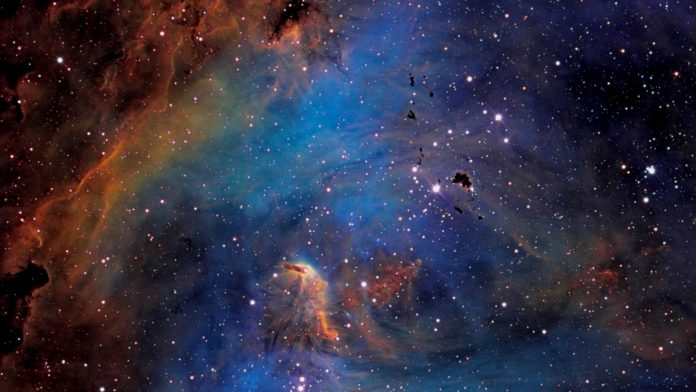
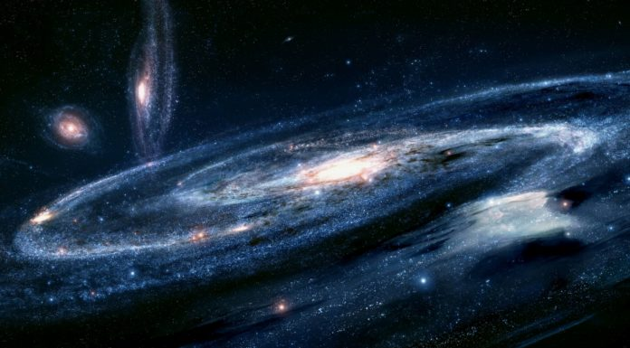
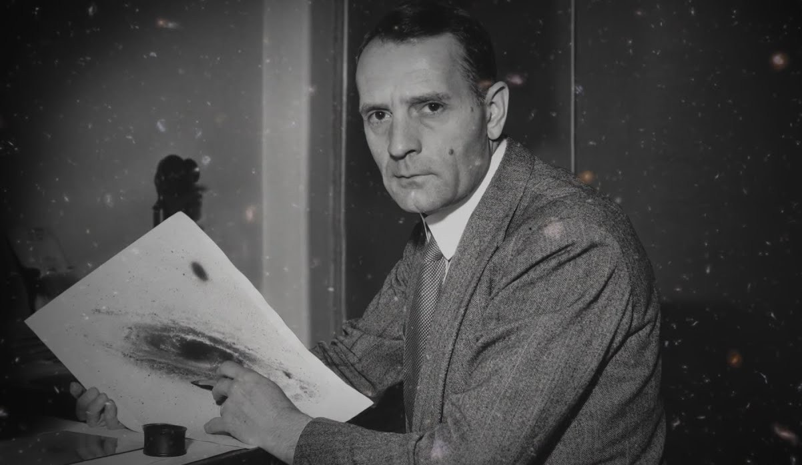
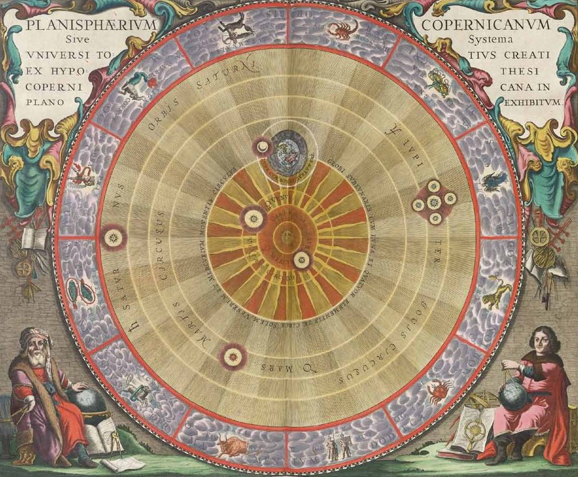
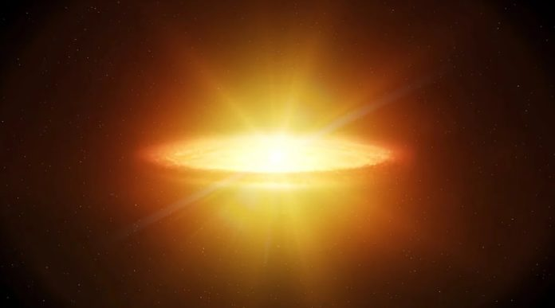
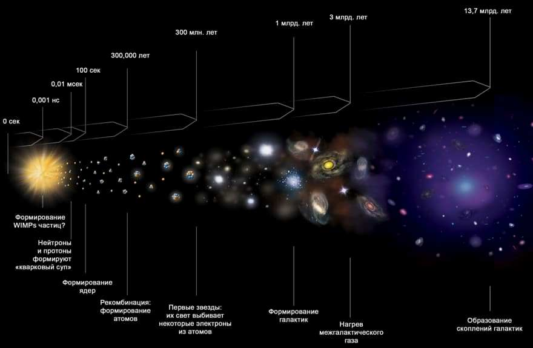
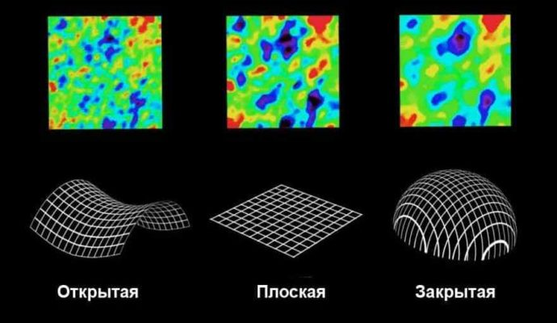
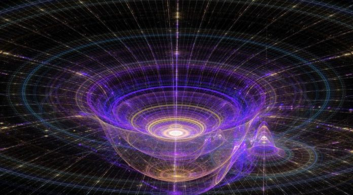

Что такое Вселенная?

Вселенная появилась миллиарды лет назад, и люди до сих пор не смогли доказать истинные причины ее образования. Она представляет собой все существующее пространство. Галактики, звезды, планеты – все это часть необъятной Вселенной.
Люди стараются изучать космос, но им предстоит проделать титаническую работу, прежде чем они смогут составить полное представление о его устройстве. Ежедневно астрономы из разных стран изучают новые области, но не могут добраться до границ мира. Причем исследования ведутся в разных направлениях: изучение Солнечной системы, соседних галактик, попытки установить общий размер Вселенной, подсчет космических объектов и т.д. Даже спустя десятки лет упорной работы 100%-е изучение внеземного пространства кажется недостижимой целью.
Вселенная постоянно меняется, что усложняет процесс ее исследования и составления описаний определенных ее частей. Но одно можно сказать точно: ее границы так так велики, что недоступны для изучения.
Вселенная постоянно меняется, что усложняет процесс ее исследования и составления описаний определенных ее частей. Но одно можно сказать точно: ее границы так так велики, что недоступны для изучения.
Вселенная постоянно меняется, что усложняет процесс ее исследования и составления описаний определенных ее частей. Но одно можно сказать точно: ее границы так так велики, что недоступны для изучения.
Строение вселенной

Звезды, которые видит человек, являются частью галактики. Солнце тоже входит в ее состав и находится на большом расстоянии от других светил. Если взглянуть на Млечный Путь со стороны, то он будет напоминать гигантский диск с большим скоплением звезд в центральной части. И таких галактик во Вселенной большое множество.
Интересный факт: Млечный Путь состоит примерно из 10 миллиардов звезд. Свету, чтобы добраться из одного конца галактики в другой, требуется 100 тысяч лет.
Звезды распределены в галактиках неравномерно, в разных частях имеются плотные скопления, напоминающие шар. Также есть пространства, где на протяжении многих световых лет нет ни одного светила.Вокруг большинства звезд находятся планеты, обладающие уникальным внешним видом, атмосферой и другими особенностями. Также вокруг некоторых имеются спутники – небольшие космические объекты, удерживаемые за счет притяжения.
Галактик во Вселенной огромное множество, и многие имеют спиралевидную форму, которую хорошо заметно благодаря расположению светил. Такой тип называется протогалактиками. Ученые предполагают, что во время своего образования они вращались по кругу с большой скоростью, и постепенно замедлились. Другие галактики из-за сильного сжатия водородного газа не начали движение вокруг центральной оси и остались в форме эллипса.
Межгалактическое пространство помимо пустоты может содержать различные объекты: пояса астероидов, кометы, карликовые планеты и т.д. Все вышеперечисленные объекты являются частью необъятной Вселенной. Причем регулярно рождаются новые звезды и планеты, из-за чего космос постоянно меняется.
Определение Вселенной
В первом веке до нашей эры римский философ Цицерон использовал латинское слово “universum”, чтобы единым термином охарактеризовать все пространство вокруг. Это настолько понравилось другим мыслителям, что они позаимствовали у него выражение и начали использовать в аналогичном контексте.
Словом “universum” называли все известные объекты: Землю, Солнце, далекие звезды, планеты, живых созданий и т.д. Сейчас термин потерял латинское окончание и звучит на английском как “universe“, что означает “вселенная”
И пока римляне придумывали, как охарактеризовать пространство вокруг, греки тоже старались от них не отставать. Они ввели термин “космос”, что переводится как “мир”. Со временем оба слова начали использоваться для описания пространства вокруг. Однако под “Вселенной” больше подразумеваются галактики, звезды и планеты, а под “космосом” пространство между ними.
Доказательства, что Вселенная имеет возраст

Если верить теории Большого взрыва, то отсчет жизни Вселенной начинается в ту секунду, когда сжатая до микроскопических размеров сингулярность моментально расширилась. Со временем это пространство заполнили галактики и постепенно приняли тот вид, который люди наблюдают из телескопов.
Если верить теории Большого взрыва, то отсчет жизни Вселенной начинается в ту секунду, когда сжатая до микроскопических размеров сингулярность моментально расширилась. Со временем это пространство заполнили галактики и постепенно приняли тот вид, который люди наблюдают из телескопов.
Вселенная проделала долгий путь, на который ушли даже не миллионы, а миллиарды лет. Впервые о том, что у нее есть возраст, люди начали задумываться примерно в XVIII веке. Когда Земля была достаточно изучена, они обратили внимание к звездам и начали стремиться узнать как можно больше о них.
Вселенная проделала долгий путь, на который ушли даже не миллионы, а миллиарды лет. Впервые о том, что у нее есть возраст, люди начали задумываться примерно в XVIII веке. Когда Земля была достаточно изучена, они обратили внимание к звездам и начали стремиться узнать как можно больше о них.
Интересный факт: ученые не исключают наличие в космосе областей, где объекты имеют одну температуру. Но они должны состоять из одинаковых материалов.
Доказать наличие возраста у Вселенной иным способом удалось в XX веке. Астроном Леметр выдвинул гипотезу, что пространство вокруг не бесконечно, имеет границы и постоянно увеличивается. Эдвин Хаббл поддержал его, поскольку заметил, что соседние галактики постепенно отдаляются от Млечного Пути. И если перемещаться назад во времени, можно оказаться во мгновении, когда размеры Вселенной были минимальными и еще не начали расти. Именно в этот момент и произошло ее рождение, соответственно она имеет возраст./
Как возникла Вселенная

- На данный момент теория Большого взрыва является наиболее логичным предположением о том, как возникла Вселенная. Она объясняет появление объектов, физических законов, материй и всего того, что находится в космосе.
- Предположительно, все началось с небольшой сингулярности огромной плотности, для которой не существовало времени. В определенный момент она начала расти с огромной скоростью, порождая пространство, физические законы, гравитацию и т.д. Долгое время температура внутри была настолько высокой, что образование каких-либо частиц было невозможным.
- Через 380 тыс. лет она снизилась до 3000К, и тогда начали формироваться субатомные частицы, которым на смену вскоре пришли полноценные атомы. А через миллиарды лет из пылевых облаков они превратились в звезды, планеты, астероиды. Источник: https://kipmu.ru/vselennaya/
Эволюция Вселенной

Спустя миллиарды лет, когда в пространстве появились атомы и молекулы, под действием гравитации они начали перемещаться относительно друг друга. Этот период ученые назвали Структурной Эпохой. Источник: https://kipmu.ru/vselennaya/
Уже в первые мгновения после расширения, в пространстве появились простейшие частицы, имеющие световую природу. Примерно через год начинает появляться темная материя. А еще через 380 тыс. лет после снижения температур появляются молекулы, способные образовывать разные вещества

Постепенно частицы сбились в газовые облака огромных масштабов, а еще через некоторое время начали формироваться звезды и планеты, которые обладают взаимным притяжением. Первые галактики образовались спустя 300 млн. лет с момента Большого взрыва. Однако современный вид они приобрели лишь через 10 млрд. лет.
Интересный факт: существует предположение, что финальным этапом формирования Вселенной будет ее повторное сжатие в единую точку сингулярности, которая снова расширится благодаря Большому взрыву.
Доказательством того, что эволюция Вселенной еще далека от завершения, является реликтовое излучение. Если оно заметно на границах пространства, значит, еще не иссякла энергия, выделенная в момент Большого взрыва. Соответственно, космос продолжает расширяться.
Структура и форма Вселенной

Утверждение того, что реликтовое излучение находится на самом краю Вселенной, довольно спорное. Доказано, что пространство расширяется быстрее скорости света, поэтому реальные края космоса уходят дальше мест, куда успела добраться световая энергия от Большого взрыва. По предварительным оценкам, сейчас размер Вселенной составляет примерно 91 миллиард световых лет, и это число постоянно растет.
Ученые со всего мира пытаются определить точную структуру пространства вокруг. Совершенно ясно, что космос состоит из галактик, между которыми находится пустота, пылевые облака, скопления астероидов и прочие объекты. Однако какую он имеет форму и структуру?

Вселенная подвластна четырем измерениям: координатам XYZ и времени. На основе этого ученые составили три варианта структур, которым может подчиняться пространство вокруг:
- Открытая по форме похожа на седло и не имеет границ, такая структура не может растягиваться в пространстве бесконечно и должна обязательно остановиться
- Плоская представляет собой квадрат, который может увеличиваться бесконечно;
- Закрытая похожа на замкнутую сферу, которая не может расти бесконечно, однако исследователи отмечают, что это может произойти через “неограниченное” количество времени.
Ученые пока не решили, какая структура Вселенной является достоверной. Однако все три варианта позволяют спрогнозировать ее форму.